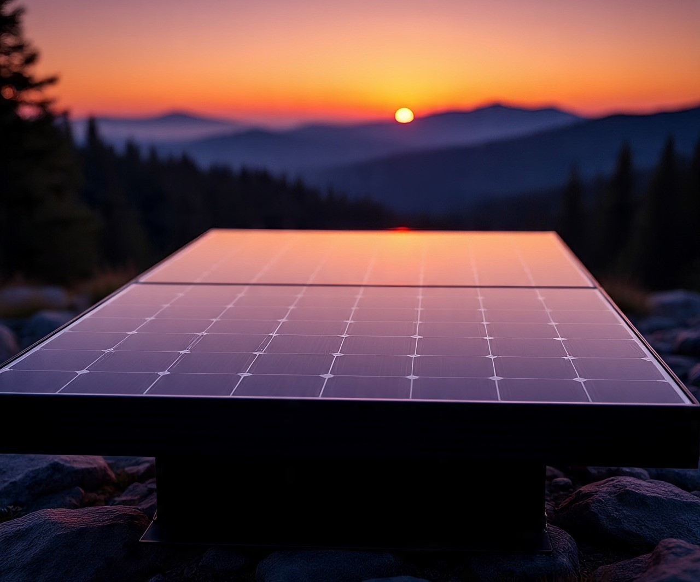

A Nation Power Ray é uma empresa criada com foco em impulsionar a transição para um futuro mais sustentável e limpo, e aumentar o controle sobre geração elétrica para que todos que utilizem possam ter descontos nas contas de luz, segurança contra falhas de rede, além da possibilidade de comprar e vender energia elétrica.
Nosso objetivo é aumentar o controle do usuário sobre a geração de energia solar, monitorar a rede
elétrica remotamente por dispositivo móvel ou por uma máquina Desktop através do aplicativo, além de evitar
gastos
extras em tempo e dinheiro para manutenção e análises profissionais, e contribuir ativamente para a
preservação do meio ambiente, reduzindo a dependência de fontes de energia não renováveis e
combatendo as mudanças climáticas.
Visamos também aumentar o controle e melhorar a gestão da produção elétrica em prol de reduzir gastos
com dinheiro, além de reduzir gastos em manutenção no intuito de deixar o sistema pleno.
Fornecemos geradores e placas solares com tecnologia da mais alta qualidade, instalação rápida e eficiente,
além de suporte técnico 24 horas por dia para nossos clientes.
Existem diversas maneiras de sintetizar energia em eletricidade, e o uso da tecnologia de geração elétrica tem ganhado grande repercussão devido a sua facilidade de uso. Há variados meios de gerar energia, tanto acessíveis e limpas como solar e eólica, hidroelétrica, biomassa, nuclear e carvão. A ideia da pesquisa surgiu após uma análise da utilização de painéis solares por parte da população e empresas. Foi averiguado que, em sua maioria, empresas de grande porte e famílias de alta renda possuem painéis à sua mercê e foi notado que há problemas a serem solucionados quanto à gestão. Os objetivos do projeto são: aumentar o controle dos usuários sobre a geração; monitorar a rede elétrica remotamente por dispositivo móvel ou por uma máquina Desktop através do aplicativo “Etron Linkwork”; evitar gastos extras em tempo e dinheiro para manutenção e análises profissionais; explorar o MLE (Mercado Livre De Energia);